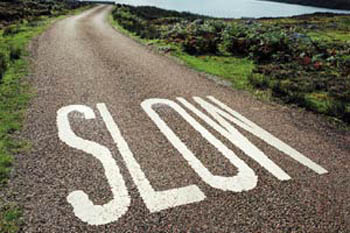

Spori gradovi
Jedno od idealnih letnih putovanja moglo bi da izgleda ovako: Dobra kola i društvo, put ka zapadu, sve do Italije. U njoj poseta 30+ gradova iz asocijacije Sporih gradova. Putovanje bi, pretpostavljam trajalo 30+ dana. A posle bi smo videli.
Evo priče:
Inspirisani pokretom 'Spora hrana' (kao protivteža brzoj hrani), 32 italijanska grada su pre
nekoliko godina oformirala asocijaciju 'Sporih gradova'. Cilj im je unapređenje kvaliteta života njihovih građana u raznim sferama kroz razmenu iskustava i uspešnih rešenja u svemu od dobre ishrane do usluga, javnih službi i gradske strukture. Već 2003. u ovoj grupaciji bilo je 63 grada iz celog sveta (Velika Britanija, Australija, Nemačka, skandinavske zemlje, SAD, itd).
Neke odlike Sporih gradova:
- Sprovođenje politike zaštite životne sredine razvijene tako da očuva i razvije bitne karakteristike prirodnog okruženja i gradskog jezgra, stavljanjem akcenta na obnovu i tehnike ponovnog korišćenja resursa
-Primena infrastrukturne politike koja je funkcionalna za unapređenje, a ne za okupaciju zemljišta
- Promovisanje proizvodnje i upotrebe hrane proizvedene korišćenjem prirodnih, eko-kompatibilnih tehnika, bez genetski modifikovanih proizvoda; sprovođenje mera da se sačuvaju i razviju tipični proizvodi koji su na neki način ugroženi
- Očuvanje autohtone proizvodnje, ukorenjene u kulturi i tradiciji, koja doprinosi prepoznatljivosti jedne regije
- Promovisanje gostoprimstva kao istinske veze sa lokalnom zajednicom i njenim specifičnim karakteristikama, kao i uklanjanje prepreka koje mogu da ugroze kompletnu i široko rasprostranjenu upotrebu gradskih resursa. To praktično znači smanjenje zagađenja i saobraćaja, povećanje zelenih i pešačkih zona, podrška farmerima koji proizvode lokalne delikatese, kao i prodavnicama i restoranima koji ih prodaju, a takođe i očuvanje lokalne estetske tradicije.
Kako se u jednom tekstu kaže, ovaj pokret stavlja: «zabavu ispred profita, ljudska bića ispred centralne uprave, sporost ispred brzine.» Ljudi u administracijma ovih gradova svesni su da nije lako plivati suprotno talasu globalizacije, ali ipak smatraju da je «Filozofija sporog» najbolji način za vođenje grada.
Tako je, na primer, grad Bra zabranio automobile, supermarkete i neonske reklame u istorijskom jezgra grada. Malim porodičnim radnjama koje prodaju rukotvorine ili lokalne gastronomske proizvode dodeljeni su najbolji lokali. Gradska vlast pomaže renoviranje zgrada koje koriste boju meda za fasade - tipičan kolorit za taj region. U školama deci se daju organsko voće i povrće koje proizvode lokalni proizvođači. Skupština grada otvorena je subotom pre podne, kako bi se ljudima omogućilo da obave administrativne poslove bez žurbe.
Ali, ovakvi gradovi nisu zaustavljeni u prošlosti: oni koriste svaku modernu tehnologiju koja može da unapredi kvalitet života: autobuse na struju, internet za obavljanje birokratskih poslova, itd. Naravno, još uvek postoje brojni problemi: buku je teško smanjiti zbog opšteraširene intenzivne navike korišćenja mobilnih telefona, a automobili se, kao i obično, voze brzo.
Komentari
joj i ja. ajmo svi zajedno napraviti neku utopisticku zajednicu...
 Ljube | 09.06.06 15:16
Ljube | 09.06.06 15:16
Ja sam uvek za utopisticku zajednicu a osim toga izrazavam sumnju da se Los Andjeles ikada nadje medju sporim gradovima.
SD iz LA | 09.06.06 15:40
ovo je super, u ovome bi i neki nasi gradici mogli da se pronadju
tkt | 13.06.06 10:19
Evo, otisli su LjubaR i Al-Harvardi na turu po gradovima Svilajnac, Vranje i sl, mozda donesu izvestaj da se stvar razija u tom pravcu
La Lara | 14.06.06 10:09
 RSS feed
RSS feed
 sadržaji se objavljuju pod
sadržaji se objavljuju pod
meni ovo zvuci odlicno. cinjenica je da su mnoge tehnologije prihvatane nekriticki u prethodnih 50ak godina i da su rezultati (posledice, bolje reci) vidljivi. ja bih voleo da zivim u jednom takvom gradu u Italiji.